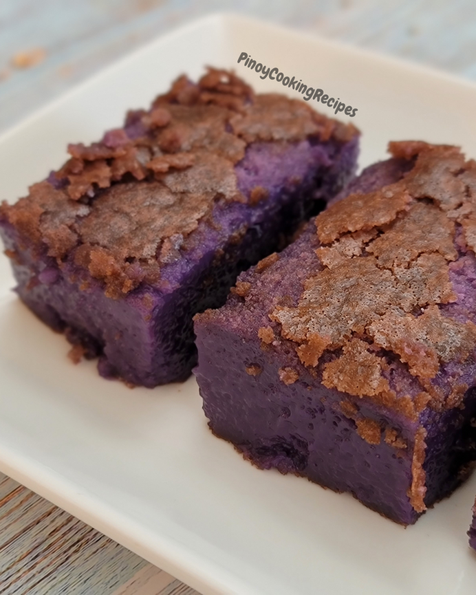

Ube Butter Mochi

This is a recipe for Ube Butter Mochi.
Ingredients
- 4 eggs
- 2 cups fat free milk
- 1 can (13.5 ounces) coconut milk
- 1 teaspoon vanilla (Try my recipe for homemade vanilla extract
- 2 teaspoons ube extract
- 1 box (16 ounces) mochiko flour
- 2 cups sugar
- 2 teaspoons baking powder
- ½ teaspoon salt
- 1/2 cup unsalted butter, melted
Directions
- Preheat oven to 350F.
- In a medium mixing bowl combine wet ingredients: eggs, milk, coconut milk, vanilla. Stir to combine. Set aside.
- In a large mixing bowl combine dry ingredients: mochiko flour, sugar, baking powder. Stir to combine.
- Add wet ingredients to dry. Stir to combine. Add butter and stir again until well combined.
- Line a 9 by 13 pan with parchment paper. Pour mixture in pan and tap the pan to release any air bubbles.
- Place in oven and bake for 1 hour or until the top is golden brown.
- Let pan cool completely before cutting and enjoying.